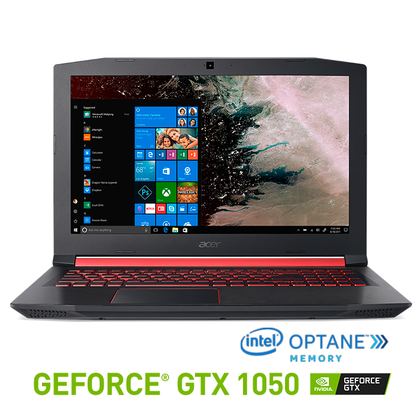
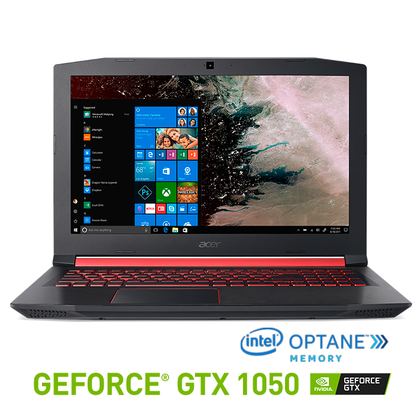
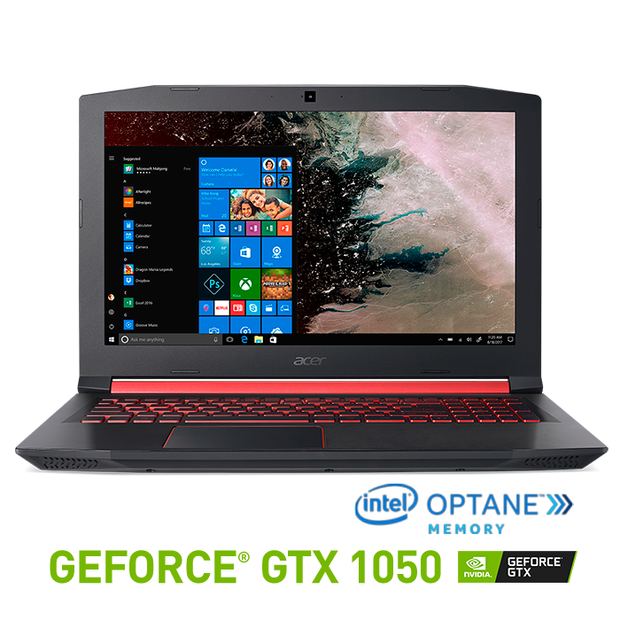

Joselito PC
Inicio
Registros

Te podemos ofrecer los mejores equipos del mercado y a los mejores precios.
Los equipos gamer son equipos que pueden ser portatiles o de escritorio que pueden tener un alto rendimiento con un disco solido.

 
